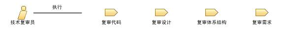

| 角色：技术复审员 |

关系
 |
|
| 修改 | |
|---|---|
| 流程使用情况 | |
主要描述
|
角色将执行任务和开发工作产品的职责组织成逻辑组。 每个角色都可以被分配给一个或多个人，而每个人也可以充当一个或多个角色。为技术复审员角色配备人员时，需要同时考虑该角色所需的技能和为该角色分配人员时所能采取的不同方法。 |
人员配备
| 技能 |
扮演技术复审员角色的人需要具备相应的技能和知识，包括：
|
|---|---|
| 分配方法 |
根据正在进行复审的工作产品、所涉及的团队和参与复审的团队成员的可用性情况，逐个地为每个案例将技术复审员角色分配给一个或多个人。 |
© Copyright IBM Corp. 1987, 2006. All Rights Reserved. |